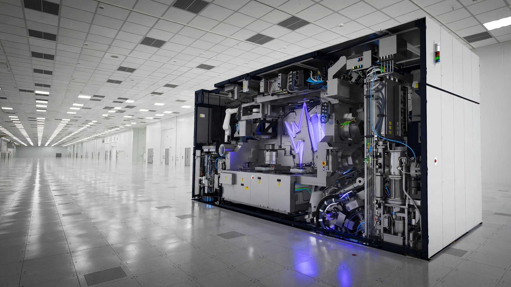

ASML Builds 60 Machines a Year. They’re the Bottleneck for Every AI Chip on Earth.
On Wednesday ASML reports earnings while its $300 million EUV lithography systems remain the binding constraint on global AI chip production. Cross-referencing tool throughput data with TSMC process specifications reveals a capacity ceiling that half a trillion dollars in planned AI infrastructure cannot buy past: roughly 280 machines, each printing 230 wafers per hour, divide the entire advanced semiconductor supply into a 30-million-wafer-per-year pipeline shared by every chipmaker on Earth.

Two hundred and eighty. That is roughly the number of extreme ultraviolet lithography machines operating in semiconductor fabs worldwide, and every chip manufactured on a process node below 7 nanometers passed through one of them: every NVIDIA Blackwell GPU, every Apple A18, every SK Hynix HBM3E memory stack, every AMD EPYC server processor, all patterned by a tool built in a single factory complex in Veldhoven, a town of 45,000 in the southern Netherlands where the ceiling on global AI chip production is set not by capital, not by demand, but by how many of these machines can be assembled in a calendar year.
ASML Holding is the only company on the planet that makes them. It reports second-quarter earnings on Wednesday, and the numbers investors care about are not revenue or margins but how many EUV tools ASML shipped, how many it will ship next quarter, and whether the answer is large enough to keep the AI boom from running into a wall made of physics, precision optics, and German laser engineering.
A Reuters analysis published Monday lays out the scorecard: 60 EUV tools targeted for 2026, up from 48 in 2025, with 80 planned for 2027 and a theoretical maximum of 90 without adding physical factory capacity, though JPMorgan analysts believe ASML could stretch to 110 by accelerating assembly and installation. None of these numbers answer the question that matters: are they enough?
Counting Wafer-Layers, Not Wafers
Most analyses of semiconductor capacity count wafer starts, tracking how many thousand wafers a fab processes per month and how a new facility will add Y thousand more, but this framing is misleading for EUV because no advanced chip sees an EUV tool just once. A processor built on TSMC’s N5 process passes through an EUV scanner for 10 to 14 separate lithography layers. TSMC’s N4P, the node used for NVIDIA Blackwell, requires a comparable count. Samsung’s 4 nm node demands roughly 15 EUV layers, and as the industry migrates to N3, the count climbs above 20.
A single EUV tool does not produce chips; it produces wafer-layer exposures, and the number of those exposures required per finished chip has been rising with every process generation, turning each scanner into a shared bottleneck that compounds across nodes.
ASML’s latest model, the Twinscan NXE:3800E, processes 230 wafers per hour at a 30 mJ/cm² dose, a 44 percent improvement over the NXE:3600D’s 160 wafers per hour. But the installed base is a mix of older and newer models. A blended average of roughly 200 wafers per hour, running approximately 7,000 productive hours per year after accounting for maintenance, qualification, and the occasional unscheduled downtime, yields about 1.4 million wafer-layer exposures per tool per year.
Multiply across the estimated installed base of 280 active EUV scanners and you get the global ceiling: approximately 392 million wafer-layer exposures annually. Divide by an average of 13 EUV layers per chip and the effective capacity is roughly 30.2 million advanced wafer starts per year.
Thirty million wafers. That is all the advanced silicon the world can produce, and Apple, NVIDIA, AMD, Qualcomm, Intel, Samsung, SK Hynix, Micron, MediaTek, Broadcom, and every other company designing chips below 7 nm must fit their demand inside that number or wait.
60 Tools, $18 Billion, and a $65 Billion Multiplier
ASML’s 60 new tools for 2026 add 84 million wafer-layer exposures to global capacity, which at 13 EUV layers per chip translates to approximately 6.5 million additional effective wafer starts.
Each of those wafers will produce finished semiconductors worth $5,000 to $15,000, depending on die size and yield. For large AI chips like Blackwell, where each 300 mm wafer yields roughly 30 good 800 mm² dies priced at several thousand dollars each, revenue per wafer runs toward the top of that range; for high-density mobile SoCs with 300-plus good dies per wafer at lower unit prices, it sits near the bottom. A weighted average around $10,000 per wafer implies that ASML’s 60 tools unlock approximately $65 billion in downstream semiconductor revenue, a staggering multiplier from an $18 billion equipment sale.
Leverage ratio: every dollar of EUV tool revenue enables $3.60 in finished chip revenue downstream, and no other single company in any industry sits at a chokepoint with that kind of multiplicative power over its customers’ output.
Why You Cannot Buy Your Way Past This
An EUV lithography system weighs roughly 180 metric tons, ships in more than 40 freight containers, and requires four to six months of installation and qualification at the customer’s fab before it exposes a single production wafer. Each machine contains about 100,000 individual parts sourced from hundreds of suppliers, but three relationships are existential.
Zeiss, based in Oberkochen, Germany, is the sole supplier of projection optics, and each EUV lens assembly contains six mirrors polished to a surface roughness measured in fractions of an atom, a manufacturing process that takes months per unit and cannot be meaningfully compressed without compromising the nanometer-scale accuracy that makes the whole system work. Trumpf, in Ditzingen, supplies the high-power CO&sub2; lasers that generate EUV light by firing roughly 50,000 molten tin droplets per second with a laser pulse, creating a plasma that emits 13.5 nm photons. “We are fully prepared to meet ASML’s EUV demand over the next three years,” Trumpf spokesperson Manuel Thoma told Reuters, a timeline that is itself revealing because it means Trumpf’s own capacity expansion has a three-year planning horizon, locking in the 60-80-90 trajectory regardless of what customers are willing to pay.
ASML itself acknowledged the constraint in a statement to Reuters: “Beyond the 90 we are looking at creative ways to help customers.” Those creative measures include upgrading older tools, accelerating machine assembly, and shortening installation timelines, but none of them change the fundamental physics of how long it takes to grind an atomically smooth mirror or build a 50,000-pulse-per-second laser, and physics, unlike procurement, does not respond to purchase orders.
Demand Growing Faster Than Supply
ASML’s tool shipments are growing at 25 percent annually, from 48 tools in 2025 to a targeted 60 in 2026, and if 2027 hits the 80-tool target, that represents 33 percent growth, with even the theoretical stretch to 90 constituting a 50 percent increase from 2025’s baseline, numbers that would be impressive in any other industry but may not be enough in this one.
Demand for advanced silicon is growing faster. TSMC reported June 2026 revenue of $13.2 billion, up 67 percent year over year. SK Hynix’s net income surged 1,324 percent and Nanya Technology’s revenue rose 684 percent. Memory now accounts for 51 percent of ASML’s Q1 2026 system sales, up from 30 percent the previous quarter, a shift driven by the HBM buildout required to feed AI accelerators that are themselves consuming EUV capacity at the logic fabs where they are manufactured.
Meanwhile, the customer list for EUV capacity keeps expanding. Intel announced a $5.7 billion investment in its Irish fab on Monday, with the majority spent by 2027 on Intel 3 process equipment. TSMC is investing $165 billion in Arizona. Elon Musk’s TeraFab plans, if realized, would require dozens of additional EUV tools. Tower Semiconductor announced a $3 billion Japan expansion for silicon photonics. Each of these projects competes for allocation from the same 60-machine production line in Veldhoven.
If AI chip demand compounds at 40 percent annually while ASML’s tool output grows at 25 to 33 percent, the gap between what the industry wants and what the physics of EUV manufacturing allows widens by roughly 15 percentage points each year. By 2028, cumulative unmet demand could exceed the output of 30 EUV tools, equivalent to a fab that was never built.
What This Analysis Cannot Show
Several assumptions in the capacity ceiling calculation deserve scrutiny. Estimating the global installed base at 280 active tools requires subtracting retired, refurbished, and development-only systems from cumulative shipment figures that ASML does not break out in public filings. Real operational count could be 10 percent higher or lower. Blending throughput at 200 wafers per hour across the fleet assumes a mix of older NXE:3600D and newer NXE:3800E tools that tracks historical shipment volumes, but actual utilization varies by customer and node. High-NA EUV tools, of which Intel has accepted the first NXE:5200, could increase effective capacity per layer by enabling single exposures where low-NA requires double patterning, but high-NA adoption remains in qualification and its throughput is below 100 wafers per hour in initial configurations.
More fundamentally, not all AI inference requires leading-edge silicon. Large-scale deployment of models on older nodes, or on custom accelerators using mature processes, can partially decouple AI compute growth from EUV capacity constraints. China’s DFSX, a startup backed by Jack Ma’s venture fund, recently released a chip built on 14 nm using 3D memory stacking, claiming inference performance competitive with 4 nm designs. If such architectural workarounds scale, the binding constraint on AI infrastructure could shift from lithography to packaging, memory bandwidth, or power delivery.
ASML’s own upgrade pipeline introduces additional slack that the capacity ceiling does not capture. Retrofitting an NXE:3600D with 3800E-class source power and wafer stages can increase throughput by 30 to 40 percent without building a new tool. If half the installed base receives such upgrades by 2028, effective capacity rises meaningfully. ASML has indicated that installed-base upgrades are a key revenue growth driver and that customer appetite for them strengthened through late 2025.
What This Means for You
For investors evaluating ASML ahead of Wednesday’s earnings, the number to watch is not revenue guidance or EPS. It is the unit shipment target for 2027 and any signal on whether the theoretical 90-tool ceiling can be lifted. Deutsche Bank expects ASML to announce capacity expansion to over 100 tools by 2028, which would push earnings per share to €60. If that announcement comes a quarter early, the stock has room to run from its current €610 billion valuation. If it does not, the bottleneck narrative tightens and customers further up the chain become the beneficiaries of scarcity pricing.
For policymakers debating semiconductor supply chain resilience, the concentration risk is stark. Two German companies, Zeiss and Trumpf, and one Dutch company, ASML, collectively determine how many advanced chips the world can manufacture. No amount of CHIPS Act funding or fab construction spending in Arizona, Ohio, or Ireland can produce a single additional wafer if those three companies cannot increase their output. Diversifying semiconductor manufacturing geographically is necessary but insufficient. Diversifying the toolmaking supply chain is harder and more important.
For anyone trying to understand why AI hardware remains scarce despite hundreds of billions in capital deployment, the answer is in a cleanroom in the southern Netherlands, where machines the size of a city bus print circuits smaller than a virus, one tin-droplet explosion at a time, 50,000 times per second, on 280 tools that serve the entire planet. ASML can build 60 more this year. Probably 80 next year. Maybe 90 the year after. And that is all there is.